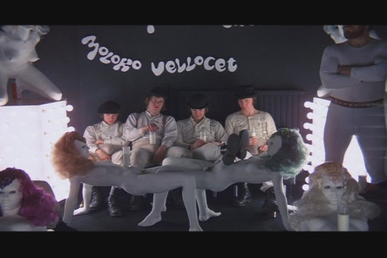
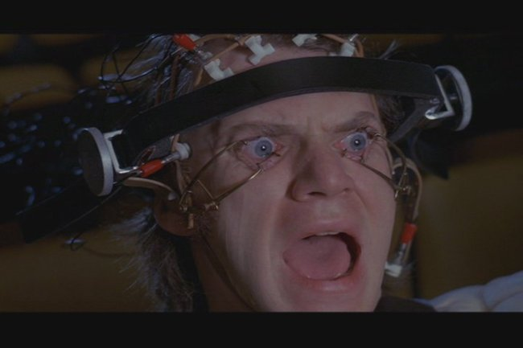

Movie review by : Mr. Roboto
Year : 1971
Directed by : Stanley Kubrick
Written by : Stanley Kubrick, based on the novel by Anthony Burgess
Degree of Cyberpunk visuals : High
Correlation to Cyberpunk themes : High
Rating : 8/10
Key cast members :

Overview: Unquestionably, A Clockwork Orange has to be among the most recognizable names of pre-cyberpunk works, invoking surrealistic images of the old ultra violence, sex done to the William Tell Overture, models of naked girls as tables and beverage dispensers, chemically induced behavior modification, the threat of Karma,... and a bit of Beethoven for good measure. It has often been cited as inspiration for cyberpunk novels, and even Rob Zombie salutes the film in his video for Never Gonna Stop (The Red Red Kroovy). The subject matter, while speculating about 1995 from a 1960's view, is still surprisingly relevant for 2007. With themes of street gangs, youth against the elderly, and forced behavioral changes against free will, one can swear the movie was more recent.
But can it be called a cyberpunk movie? There's no question about the "punk", but in all honesty, it's a little thin on the "cyber" since there's no ubiquitous access to information or man-machine fusion, though Alex does undergo a "reprogramming" in a skull-cap wired to machines to monitor his vital functions. The lack of "cyber" isn't Mr. Kubric's or Mr. Burgess's fault, since nobody in the 60's could have predicted the impact of computer technology when 1995 rolled around. It still doesn't subtract much from this piece of cinema goodness that many agree is a timeless classic.
So grab a glass of milk mixed with your narcotic of choice, pull up a naked model table, brush up on your Nadsat, and vidi well, little brothers.
The Story: Starting at the Korova Milk Bar, Alex De Large and his "droogs" tear up the streets of a future England city, beating derelicts, fighting other gangs, raising hell on the roads, invading homes, raping women, then returning to the Korova for a nightcap when we learn Alex also has an ear for Beethoven. His fun comes to an end when, during a failed home invasion. Alex kills a woman and is ambushed by his droogs, leaving him for the police to capture, convict of murder, and sentence to forty years in prison.
Two years into his sentence, Alex learns of the Ludovico treatment. He wants to volunteer, but the Prison Chaplain expresses his doubts and tries to talk Alex out of it.

"The question is whether or not this technique really makes a man good. Goodness comes from within. Goodness is chosen. When a man cannot choose, he ceases to be a man."
When the Minister of The Interior visits, he selects Alex for the Ludovico treatment. The treatment involves Alex being injected with an experimental serum and made to watch videos of violence and rape, where the serum causes unexpected results.
Dr. Brodsky (During Alex's first "treatment"): "Very soon now, the drug will cause the subject to experience a deathlike paralysis together with deep feelings of terror and helplessness. One of our early test subjects described it as being like death. A sense of stifling or drowning. At this period we have found that the subject will make his most rewarding associations between his catastrophic experience, environment and the violence he sees."
During one "treatment", the doctors use Beethoven's 9th Symphony as the background music while a Nazi propaganda was viewed. Alex objects to the use of the music, but the treatment continues, causing him to become conditioned to the piece.

"Stop it! Stop IT! STOP IT! Stop showing NEW ROSE HOTEL! IT'S NOT CYBERPUNK!!
After the doctors show Alex's treatment worked, he's released back into society. That's when the Universe plays the Karma card...
Whose Pawn Is He Anyway? The theme of free will versus society's programming is quite dominant with the implications of the Ludovico treatment, but an underlying theme of people being used as pawns for political and personal gain is noticeable, especially when Alex returns to the home of Frank Alexander, whose house he and his droogs invaded and whose wife they raped. At first, Frank only recognizes Alex as the boy who went through the Ludovico program and calls a friend who can use him:
Frank Alexander: "He can be the most potent weapon imaginable to ensure the government is not returned in the election. The government's big boast, sir, is the way they have dealt with crime: recruiting young roughs into the police, proposing will-sapping techniques of conditioning. We've seen it before in other countries. The thin end of the wedge. Before we know it, we'll have the full apparatus of totalitarianism. This young boy is a living witness to these diabolical proposals."
Frank doesn't realize that Alex is the one who raped his wife until he hears Alex singing "Singing in the Rain" in the bath. He manages to get Alex to drink drug-laced wine to knock him unconscious. When Frank's co-conspirators arrive, they lock Alex in an upper-floor room while playing Beethoven's Ninth, causing Alex to attempt suicide. While recovering in the hospital, we see the old amoral Alex return when a nurse shows slides. The Minister of the Interior visits Alex to apologize for the treatment and offer a government job.
Alex used the people he encountered for his own amusement, including his own droogs. After undergoing the treatment, he's unable to defend himself as those he tormented and attacked gain a measure of revenge on him. Then he's used as a political pawn.
Conclusion: A Clockwork Orange is a difficult movie to describe. It's not an easy view with it's ultraviolence, rampant sex, and drug use, but it makes for an interesting movie nonetheless. It's a sick, twisted, demented, deviant, weird, and totally fucked-up view of the future. In other words, a real good movie.